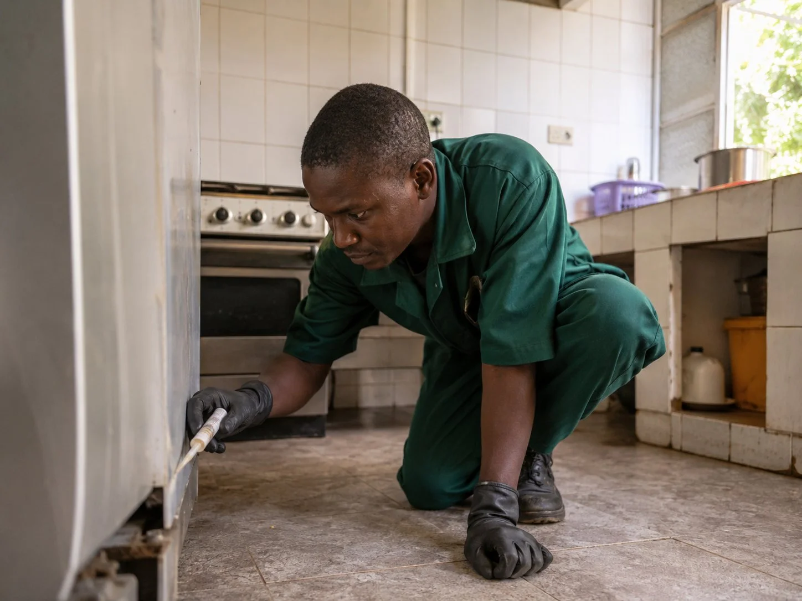
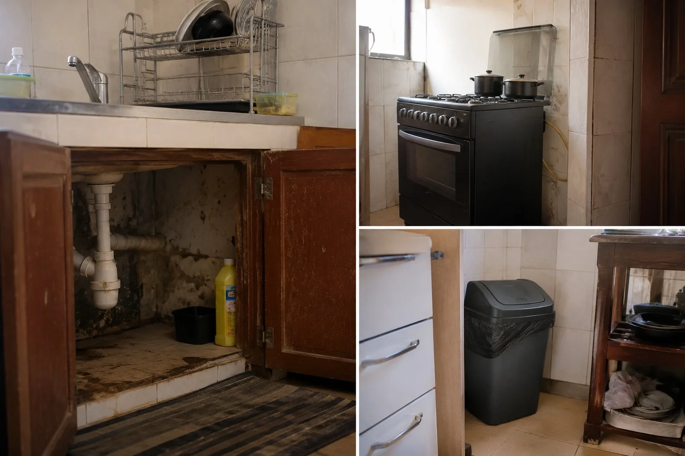
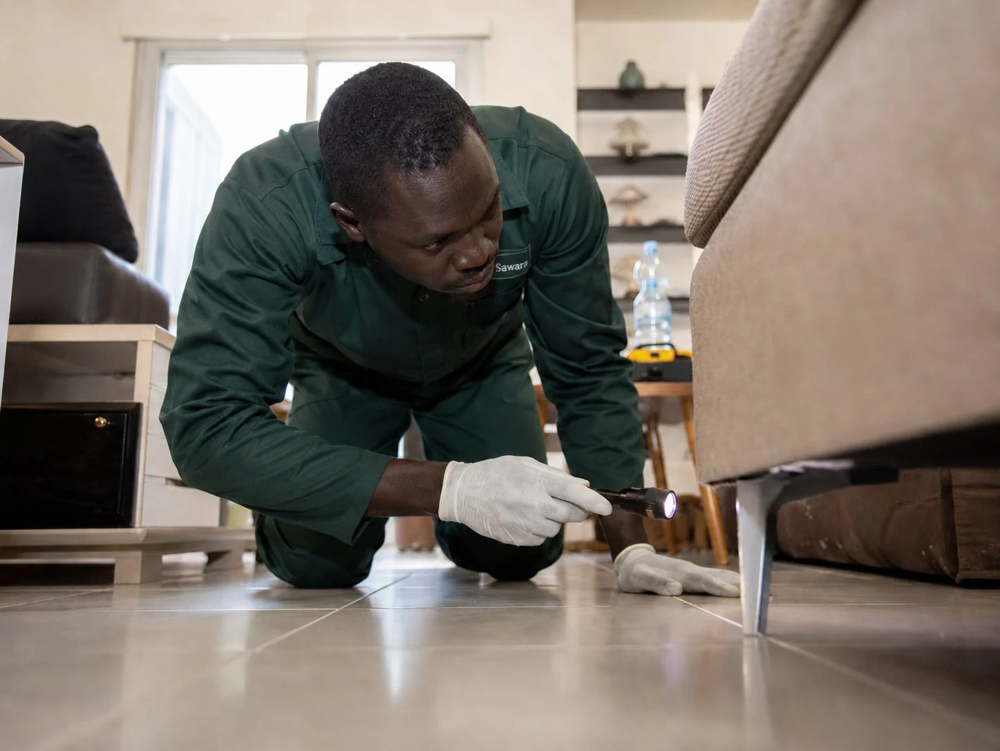
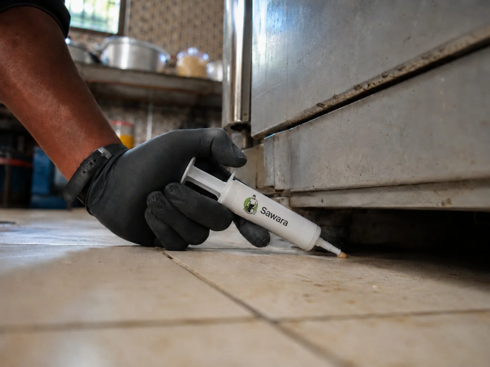

SawaraEntreprise
77 552 64 19
Devis WhatsApp
WhatsApp
Les cafards s'installent rapidement dans les cuisines, salles de bain et locaux professionnels de Dakar. Un technicien formé identifie les foyers, traite les zones de passage et limite le risque de retour. Sawara intervient pour les particuliers, restaurants, bureaux et commerces.

À Dakar, la chaleur ne baisse presque jamais vraiment. Et quand l'hivernage arrive, l'humidité s'installe dans les murs, les joints, les canalisations. Ce sont exactement les conditions que les cafards recherchent pour s'installer et se reproduire.
Dans les cuisines familiales de la Médina, les réserves d'un restaurant du Plateau, les placards d'un appartement à Mermoz ou la réception d'un bureau à Fann — partout où il fait chaud, où il y a de l'eau et de la nourriture, les cafards peuvent s'installer discrètement.
Ils se reproduisent très vite. Une femelle peut générer plusieurs centaines de descendants en quelques mois. C'est pourquoi une infestation qui semble légère au départ peut devenir importante si elle n'est pas prise en charge rapidement.
Pendant la saison des pluies, certains clients constatent l’apparition de gros cafards dans les toilettes, les salles de bain, les canalisations ou les zones proches des fosses septiques. L’humidité, les remontées d’odeurs, les regards mal fermés et les fissures peuvent favoriser leur passage vers l’intérieur.
Dans ce cas, un simple spray dans la maison ne suffit pas toujours. Il faut identifier les points d’entrée, traiter les zones de passage, contrôler les regards, les évacuations et les endroits humides, puis appliquer une solution adaptée selon la configuration du lieu.
Sawara peut intervenir pour identifier l’origine du problème, traiter les zones concernées et vous conseiller sur les gestes de prévention pendant l’hivernage.


Beaucoup de personnes commencent par acheter une bombe insecticide ou une pâte anti-cafards en supermarché. C'est normal — c'est le réflexe. Et parfois, ça peut suffire si la présence est vraiment limitée.
Mais souvent, les cafards reviennent au bout de quelques jours. Ce n'est pas parce que le produit est mauvais — c'est parce qu'il n'atteint pas le foyer principal. Les femelles pondent dans des zones inaccessibles : derrière les plinthes, dans les gaines, sous les électroménagers. Le produit tue ce qu'il voit, mais la colonie continue ailleurs.
Un produit anti-cafards — gel appât en seringue, terre de diatomée — peut être utile en prévention ou si la présence est très ponctuelle et récente. Sawara propose d'ailleurs ces produits à la vente et peut vous orienter vers le bon choix selon votre situation.
En revanche, si les cafards reviennent malgré plusieurs tentatives, si plusieurs pièces sont touchées, si le problème se pose dans une cuisine professionnelle, un restaurant, un local avec des stocks alimentaires, ou si l'infestation semble ancienne — un diagnostic professionnel est préférable. Traiter sans identifier le foyer, c'est souvent perdre du temps et de l'argent.
Un technicien formé ne se contente pas d'appliquer un produit. Il inspecte les zones que vous ne voyez pas : derrière les meubles, dans les faux plafonds, autour des canalisations. Il identifie l'espèce, évalue l'étendue de l'infestation et choisit la méthode adaptée à votre type de lieu.
C'est cette étape de diagnostic qui fait la différence. Sans elle, on traite les symptômes — pas la source.
Chaque intervention commence par un diagnostic sur place. Sans lui, le traitement reste approximatif.
Le technicien identifie l'espèce, évalue le niveau d'infestation et localise les foyers. Il repère les facteurs favorisant la présence des cafards : humidité, points d'entrée, configuration des lieux.
Gel appât en seringue pour les espaces confinés et sensibles. Pulvérisation pour les infestations plus importantes. Combinaison des deux selon le diagnostic. Produits appliqués selon les règles d'utilisation en vigueur.
Gestion des déchets, colmatage des points d'entrée, habitudes à ajuster. La prévention fait partie intégrante de l'intervention chez Sawara.
Pour les infestations récurrentes ou les établissements professionnels, un suivi régulier peut être mis en place pour vérifier l'efficacité et ajuster si nécessaire.

Disponible à la vente chez Sawara. Application précise dans les zones de passage. Plus ciblé qu'une bombe aérosol, adapté aux espaces confinés et sensibles.
Les cafards ne font pas de distinction. Ils s'installent partout où les conditions leur sont favorables. Chaque type de lieu a ses zones sensibles et sa solution adaptée.
| Type de lieu | Zones sensibles | Solution adaptée |
|---|---|---|
| Appartement / maison | Cuisine, salle de bain, placards | Gel appât ciblé + conseils prévention |
| Restaurant / snack | Réserve, plan de travail, gaines | Pulvérisation + gel selon diagnostic |
| Bureau / commerce | Coin cuisine, archives, faux plafond | Diagnostic + traitement discret |
| Hôtel / résidence | Chambres, cuisines, lingerie | Intervention horaires décalés + suivi |
| Clinique / école | Zones de stockage, sanitaires | Produits adaptés aux personnes sensibles |
En complément d'une intervention, Sawara propose à la vente : seringue anti-cafards, terre de diatomée, insecticides ciblés. Un technicien vous oriente vers le bon produit via WhatsApp.
Demander conseilSawara intervient principalement dans le Grand Dakar. Des déplacements sont possibles selon la nature et l'urgence de la demande.
Déplacement possible à Thiès, Mbour, Saly, Diamniadio et dans d'autres zones selon la demande, la nature de l'intervention et l'organisation du déplacement.
Les questions que posent le plus souvent nos clients avant de faire appel à Sawara.